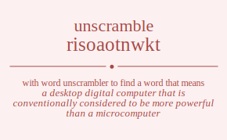

The word found after unscrambling risoaotnwkt means that a desktop digital computer that is conventionally considered to be more powerful than a microcomputer, .
risoaotnwkt has jumble solution. Please see which words made after unscrambling risoaotnwkt.
Daily Jumble Solution: workstation
You can use following links to see other word jumble solutions for the same day
ccaho cwtiek risoaotnwkt rsfik tcnoot

Unscrambled 11 letter words from risoaotnwkt
workstation
Unscrambled 9 letter words from risoaotnwkt
rotations
Unscrambled 8 letter words from risoaotnwkt
tortonis
tinworks
arnottos
rattoons
ostrakon
waitrons
strontia
ostinato
rotation
orations
stotinka
Unscrambled 7 letter words from risoaotnwkt
risotto
intorts
tritons
tortoni
nitroso
torsion
tinwork
attorns
rattons
arnotto
rattoon
ratoons
santoor
transit
station
waitron
warison
aroints
rations
oration
troikas
kations
Unscrambled 6 letter words from risoaotnwkt
strown
kotows
strook
kroons
stotin
intort
triton
intros
nitros
orison
irokos
stinko
krooni
ottars
stator
tarots
tortas
attorn
ratton
rowans
tronas
aswoon
ratoon
korats
taroks
troaks
karoos
tranks
artist
strait
strati
traits
tatsoi
aorist
aristo
ratios
satori
arioso
twains
witans
statin
taints
tanist
titans
rawins
instar
santir
strain
trains
aroint
ration
arsino
norias
kraits
traiks
troika
takins
kation
Unscrambled 5 letter words from risoaotnwkt
strow
trows
worst
worts
torts
trots
ottos
toots
torot
roost
roots
rotos
toros
torso
nowts
towns
wonts
sworn
snort
swoon
snoot
toons
works
skort
stork
torsk
kotow
kotos
stook
rooks
knows
wonks
knots
nooks
snook
kroon
twist
twits
wrist
writs
toits
riots
rotis
tiros
torsi
trios
trois
twins
stint
tints
winos
intro
nitro
irons
noirs
noris
ornis
rosin
skirt
stirk
iroko
swink
winks
knits
skint
stink
kirns
rinks
ikons
kinos
oinks
twats
watts
straw
swart
warts
start
tarts
stoat
toast
ottar
tarot
torta
sowar
ratos
roast
rotas
sorta
taros
toras
wants
warns
rants
tarns
trans
tanto
santo
rowan
trona
arson
roans
sonar
warks
karst
karts
stark
korat
tarok
troak
koras
okras
karoo
swank
wanks
stank
tanks
trank
karns
knars
narks
ranks
snark
kaons
koans
krona
waist
waits
trait
wairs
airts
astir
sitar
stair
stria
tarsi
iotas
ostia
stoai
ratio
twain
witan
taint
titan
swain
wains
antis
saint
satin
stain
tains
rawin
riant
train
airns
naris
rains
ranis
sarin
noria
ikats
krait
traik
rakis
askoi
korai
takin
kains
kinas
Unscrambled 4 letter words from risoaotnwkt
stow
swot
tows
twos
wost
wots
stot
tost
tots
trow
wort
tort
trot
rows
orts
rots
sort
tors
otto
toot
woos
oots
soot
root
roto
toro
nowt
town
wont
nows
owns
snow
sown
wons
snot
tons
worn
torn
sorn
onto
toon
onos
soon
woks
work
kors
koto
took
sook
rook
know
wonk
knot
nook
twit
wist
wits
tits
writ
stir
toit
riot
roti
tiro
tori
trio
sori
twin
tint
wins
nits
snit
tins
rins
wino
into
ions
inro
iron
noir
nori
kist
kits
skit
irks
kirs
kris
risk
kois
wink
knit
inks
kins
sink
skin
kirn
rink
ikon
kino
oink
twat
watt
staw
swat
taws
twas
wast
wats
stat
tats
wart
tart
raws
wars
arts
rats
star
tars
tsar
oast
oats
stoa
taos
rato
rota
taro
tora
oars
osar
soar
sora
want
awns
sawn
snaw
swan
wans
ants
tans
warn
rant
tarn
nota
naos
roan
kats
skat
task
wark
kart
arks
sark
koas
oaks
okas
soak
kora
okra
wank
tank
sank
karn
knar
nark
rank
kaon
koan
wait
aits
sati
wair
airt
airs
rais
rias
sari
iota
wain
anti
tain
ains
anis
sain
airn
rain
rani
naoi
ikat
saki
sika
raki
akin
kain
kina
Unscrambled 3 letter words from risoaotnwkt
tow
two
wot
tot
sow
wos
sot
row
ort
rot
tor
ors
woo
oot
too
now
own
won
not
ton
nos
ons
son
nor
noo
ono
tsk
wok
kos
kor
wit
tit
wis
its
sit
tis
sir
sri
win
nit
tin
ins
sin
rin
ion
kit
kis
ski
irk
kir
koi
ink
kin
taw
twa
wat
att
tat
saw
was
sat
tas
raw
war
art
rat
tar
ars
ras
oat
tao
oar
ora
awn
naw
wan
ant
tan
ran
kat
ask
kas
ska
ark
koa
oak
oka
ait
ais
air
rai
ria
ain
ani
Unscrambled 2 letter words from risoaotnwkt
ow
wo
to
os
so
or
no
on
it
ti
is
si
oi
in
ki
aw
at
ta
as
ar
an
na
ka
ai